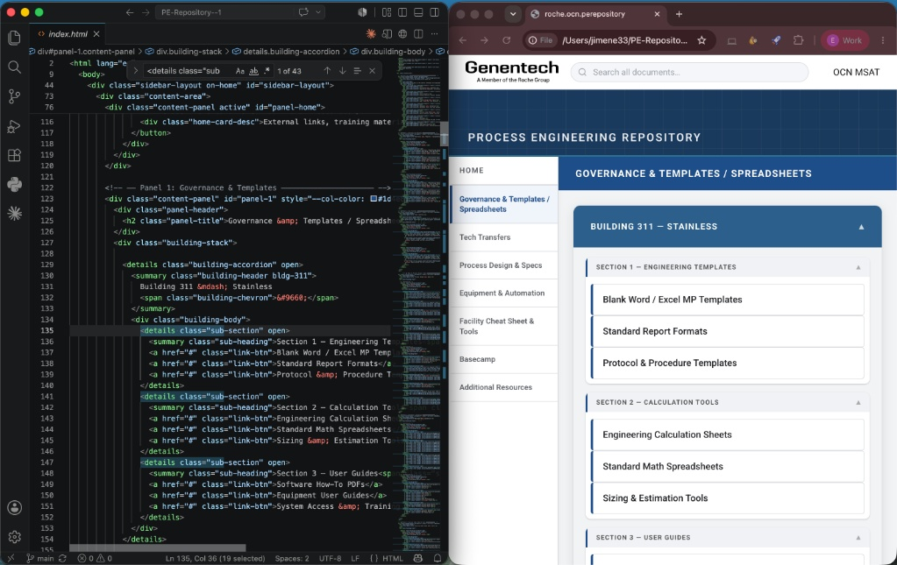

How to Edit This Repo
This guide walks you through the most common edit: updating a link. No coding experience needed — just follow each step in order.
For a more in-depth reference — including file structure, link tables with line numbers, and font setup — see the README on GitHub.
Step 1 — Open the folder in VS Code
Open VS Code. At the top menu, click File → Open Folder, then find and select the PE-Repository- folder. You'll see all the files listed in the left sidebar.
Click on index.html in the sidebar to open it. This is the file that controls everything you see on the site.

Step 2 — Find the button you want to update
Press Cmd+F (Mac) or Ctrl+F (Windows) to open the search bar. Type the exact name of the button you want to update — for example, Bioreactors. VS Code will jump to that line in the code.
You'll see something like this next to it: href="#". The # is a placeholder — it means the button doesn't go anywhere yet.

Step 3 — Replace the link
Click directly on the # and replace it with the real URL. Keep the quotation marks around it. For example:
Before: href="#" After: href="https://your-sharepoint-or-google-link-here"
Make sure you only change the part inside the quotes — don't delete anything else on that line.

Step 4 — Save the file
Press Cmd+S (Mac) or Ctrl+S (Windows) to save. You'll know it worked because the small dot on the index.html tab at the top disappears.
Don't skip this step — if you push without saving, your change won't be included.
Step 5 — Open the terminal in VS Code
At the top menu, click Terminal → New Terminal. A panel will open at the bottom of VS Code. This is where you type commands to send your changes to the live site.
You don't need to understand what these commands do — just type them exactly as shown below, pressing Enter after each one:
git add index.html git commit -m "brief description of your change" git push github main
For the commit message, replace "brief description of your change" with something short that describes what you updated, like "add bioreactor link". Keep the quotation marks.

Step 6 — Confirm it's live
Go to the GitHub repo page. Your change should appear at the very top of the file list with the message you wrote. The live site will update within a few seconds.